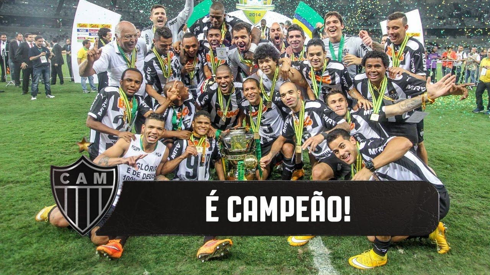

Foi fundado em 25 de março de 1908 por um grupo de estudantes, tem como suas cores tradicionais o preto e o branco. O clube teve como primeiro nome Athlético Mineiro Football Club, adotando, em 1913, seu nome definitivo. Seu símbolo e alcunha mais popular é o Galo, mascote oficial no final da década de 1930.